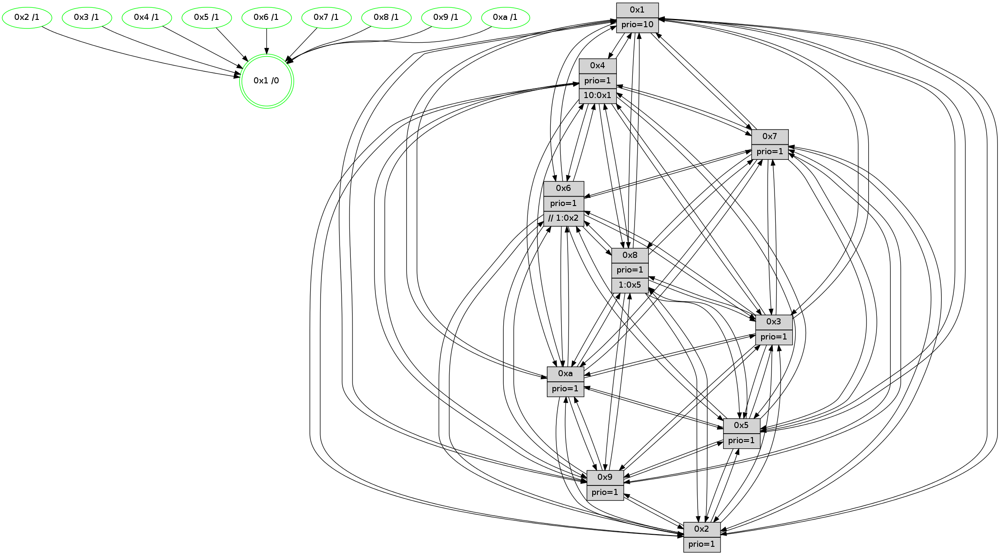

>> << IDX [start] -100 -25 -5 +0 +5 +25 [1585.35997009]
 Previous packets
----------------------------------------------------------------------
1580.631190 beacon01(faad) #0 coord=01,02,03,04,05,06,07,0a,09,08 cycle=688.0ms assoc
-- color-indic=1 64 be 12
1580.641172 beacon02(faad) #0 coord=01,02,03,04,05,06,07,0a,09,08 cycle=688.0ms assoc 64 2d 23
1580.651173 beacon03(faad) #0 coord=01,02,03,04,05,06,07,0a,09,08 cycle=688.0ms assoc 64 57 6e
1580.661173 beacon04(faad) #0 coord=01,02,03,04,05,06,07,0a,09,08 cycle=688.0ms assoc 64 20 84
1580.671173 beacon05(faad) #0 coord=01,02,03,04,05,06,07,0a,09,08 cycle=688.0ms assoc 64 5a c9
1580.681175 beacon06(faad) #0 coord=01,02,03,04,05,06,07,0a,09,08 cycle=688.0ms assoc 64 d4 1e
1580.691173 beacon07(faad) #0 coord=01,02,03,04,05,06,07,0a,09,08 cycle=688.0ms assoc 64 ae 53
1580.701177 beacon0a(faad) #0 coord=01,02,03,04,05,06,07,0a,09,08 cycle=688.0ms assoc 64 df 58
1580.721178 beacon08(faad) #0 coord=01,02,03,04,05,06,07,0a,09,08 cycle=688.0ms assoc 64 2b c2
1580.737670 [Hello(10): seq=940 sym=6,2,3,8,5,9,4,1 sysInfo=hasWarning stat=6:3,5,15,8/2:11,10,2,3/3:1,15,8,15/8:15,12,4,7/5:1,13,7,4/9:14,7,4,1/4:4,0,11,5/1:13,13,2,1]
1580.740335 [Hello(9): seq=951 sym=2,5,3,4,7,6,8,10,1 sysInfo=hasWarning stat=2:10,6,2,14/5:13,10,8,1/3:9,10,15,7/4:0,0,8,5/7:4,3,1,1/6:8,5,15,4/8:2,2,9,10/10:14,0,11,1/1:9,4,4,1]
1580.743151 [Color(9) seq=533 @0:0 prio=1]
1580.745091 [Color(10) seq=584 @0:0 prio=1]
1580.746946 [Hello(7): seq=1007 sym=2,3,5,6,8,4,9,10,1 sysInfo=hasWarning stat=2:0,4,14,7/3:2,11,2,6/5:3,13,14,6/6:12,11,14,0/8:10,3,6,2/4:12,14,4,2/9:2,11,8,4/10:1,4,0,0/1:1,5,15,0]
1580.750199 [Color(5) seq=532 @0:0 prio=1]
1580.751673 [Color(7) seq=514 @0:0 prio=1]
1580.756091 [Color(1) seq=687 @0:0 prio=10]
----------------------------------------------------------------------
1581.419320 beacon01(faad) #0 coord=01,02,03,04,05,06,07,0a,09,08 cycle=688.0ms assoc
-- color-indic=1 64 6a 27
1581.429303 beacon02(faad) #0 coord=01,02,03,04,05,06,07,0a,09,08 cycle=688.0ms assoc 64 f9 16
1581.439302 beacon03(faad) #0 coord=01,02,03,04,05,06,07,0a,09,08 cycle=688.0ms assoc 64 83 5b
1581.449303 beacon04(faad) #0 coord=01,02,03,04,05,06,07,0a,09,08 cycle=688.0ms assoc 64 f4 b1
1581.459303 beacon05(faad) #0 coord=01,02,03,04,05,06,07,0a,09,08 cycle=688.0ms assoc 64 8e fc
1581.469303 beacon06(faad) #0 coord=01,02,03,04,05,06,07,0a,09,08 cycle=688.0ms assoc 64 00 2b
1581.479303 beacon07(faad) #0 coord=01,02,03,04,05,06,07,0a,09,08 cycle=688.0ms assoc 64 7a 66
1581.489311 beacon0a(faad) #0 coord=01,02,03,04,05,06,07,0a,09,08 cycle=688.0ms assoc 64 0b 6d
1581.509308 beacon08(faad) #0 coord=01,02,03,04,05,06,07,0a,09,08 cycle=688.0ms assoc 64 ff f7
1581.521481 [Hello(1): seq=917 sym=4,2,9,5,10,3,8,6,7 sysInfo=coloring-mode-on,ColoringModeRequestCalled stat=4:11,6,13,5/2:14,3,8,8/9:2,9,9,5/5:7,12,14,12/10:12,1,1,9/3:10,0,1,13/8:6,15,7,8/6:4,11,11,6/7:9,7,0,3]
1581.524952 [Hello(5): seq=1008 sym=7,6,4,2,1,9,8,10,3 sysInfo=hasWarning stat=7:15,13,4,2/6:13,1,3,3/4:13,0,7,1/2:10,7,3,1/1:15,8,13,0/9:5,10,0,14/8:2,14,9,9/10:14,9,3,12/3:12,4,4,0]
1581.527690 PARSE ERROR************************
Traceback (most recent call last):
File "PacketAnalysis.py", line 167, in showOperaPacket
structPacket = OperaPacketParse.parsePacket(rawPacket)
File "../../pkg-python/HipSens/Core/OperaPacketParse.py", line 461, in parsePacket
return parseHelloMessage(data)
File "../../pkg-python/HipSens/Core/OperaPacketParse.py", line 125, in parseHelloMessage
struct.unpack("!H",linkList[:2])[0])
error: unpack requires a string argument of length 2
48 36 03 00 03 f0 00 02 02 10 01 00 07 00 02 00 04 00 08 00 09 00 0a 00 05 00 01 02 06 00 53 04 00 02 00 00 4c 12 07 a6 14 b7 03 9d 03 a5 ab 9e 3c b0 73 35 48 5a 00 20 4d dc
1581.530575 [Color(3) seq=637 @0:0 prio=1]
1581.532153 [Hello(2): seq=1004 sym=4,5,7,6,3,9,8,10,1 sysInfo=hasWarning stat=4:6,7,11,0/5:6,6,14,5/7:10,15,3,4/6:7,10,1,0/3:14,2,4,0/9:1,2,8,12/8:0,11,9,1/10:0,5,9,14/1:10,9,14,0]
1581.535138 [Hello(6): seq=1008 sym=3,2,5,4,7,9,8,10,1 sysInfo=hasWarning stat=3:0,1,0,0/2:11,14,8,2/5:0,3,2,7/4:2,1,11,11/7:6,0,14,2/9:7,2,0,13/8:8,4,6,11/10:11,3,10,0/1:5,12,3,1]
1581.537936 [STC(1) #0.286 tree-change,inconsistent-stability,stable,to-color d=0]
1581.539784 [Color(8) seq=595 @0:0 prio=1 >1.@5,1.@6,1.@7,1.@9]
1581.542929 [Color(2) seq=568 @0:0 prio=1]
1581.546883 [Color(6) seq=640 @0:0 prio=1]
----------------------------------------------------------------------
1582.207451 beacon01(faad) #0 coord=01,02,03,04,05,06,07,0a,09,08 cycle=688.0ms assoc
-- color-indic=1 64 d6 22
1582.217433 beacon02(faad) #0 coord=01,02,03,04,05,06,07,0a,09,08 cycle=688.0ms assoc 64 45 13
1582.227432 beacon03(faad) #0 coord=01,02,03,04,05,06,07,0a,09,08 cycle=688.0ms assoc 64 3f 5e
1582.237433 beacon04(faad) #0 coord=01,02,03,04,05,06,07,0a,09,08 cycle=688.0ms assoc 64 48 b4
1582.247435 beacon05(faad) #0 coord=01,02,03,04,05,06,07,0a,09,08 cycle=688.0ms assoc 64 32 f9
1582.257433 beacon06(faad) #0 coord=01,02,03,04,05,06,07,0a,09,08 cycle=688.0ms assoc 64 bc 2e
1582.267435 beacon07(faad) #0 coord=01,02,03,04,05,06,07,0a,09,08 cycle=688.0ms assoc 64 c6 63
1582.277438 beacon0a(faad) #0 coord=01,02,03,04,05,06,07,0a,09,08 cycle=688.0ms assoc 64 b7 68
1582.297440 beacon08(faad) #0 coord=01,02,03,04,05,06,07,0a,09,08 cycle=688.0ms assoc 64 43 f2
1582.309065 [STC(3)->1 #0.286 tree-change,inconsistent-stability,stable,to-color d=1]
1582.310787 [Hello(4): seq=1008 sym=5,8,6,2,3,9,7,10,1 sysInfo=hasWarning stat=5:2,0,14,5/8:12,0,4,0/6:8,8,10,5/2:10,11,0,4/3:14,14,8,1/9:7,11,1,5/7:14,7,5,1/10:9,5,9,0/1:2,15,2,1]
1582.313933 [STC(4)->1 #0.286 tree-change,inconsistent-stability,stable,to-color d=1]
1582.317155 [TreeStatus(4)-.->1 #0.286 tree-change,inconsistent-stability,stable child=1]
1582.318518 [Hello(8): seq=952 sym=5,2,3,7,9,6,4,10,1 sysInfo=hasWarning stat=5:0,6,9,4/2:8,2,4,15/3:9,12,8,6/7:2,10,4,1/9:0,4,10,8/6:4,13,5,4/4:11,11,15,3/10:8,5,1,6/1:6,10,5,0]
1582.321768 [Color(1) seq=688 @0:0 prio=10]
1582.323004 [Hello(7): seq=1008 sym=2,3,5,6,8,4,9,10,1 sysInfo=hasWarning stat=2:1,5,14,7/3:3,12,2,6/5:4,13,14,6/6:13,12,14,0/8:11,4,6,2/4:12,14,4,2/9:2,11,8,4/10:1,4,0,0/1:2,6,0,0]
1582.327221 [Hello(9): seq=952 sym=2,5,3,4,7,6,8,10,1 sysInfo=hasWarning stat=2:11,7,2,14/5:14,11,8,1/3:10,11,15,7/4:1,0,8,5/7:5,4,1,1/6:9,6,15,4/8:2,3,9,10/10:14,1,11,1/1:10,5,5,1]
1582.331640 [STC(5)->1 #0.286 tree-change,inconsistent-stability,stable,to-color d=1]
1582.333781 [STC(7)->1 #0.286 tree-change,inconsistent-stability,stable,to-color d=1]
1582.335213 [Color(5) seq=533 @0:0 prio=1]
1582.336755 [Hello(10): seq=941 sym=6,2,3,8,7,5,9,4,1 sysInfo=hasWarning stat=6:4,6,15,8/2:12,11,2,3/3:2,0,8,15/8:0,13,4,7/7:0,1,0,0/5:2,14,7,4/9:14,7,4,1/4:4,0,11,5/1:14,14,3,1]
1582.340544 [STC(9)->1 #0.286 tree-change,inconsistent-stability,stable,to-color d=1]
1582.341835 [STC(10)->1 #0.286 tree-change,inconsistent-stability,stable,to-color d=1]
1582.343289 [Color(9) seq=534 @0:0 prio=1]
1582.344590 [Color(10) seq=585 @0:0 prio=1]
1582.346064 [Color(7) seq=515 @0:0 prio=1]
----------------------------------------------------------------------
1582.995580 beacon01(faad) #0 coord=01,02,03,04,05,06,07,0a,09,08 cycle=688.0ms assoc
-- color-indic=1 64 12 2c
1583.005563 beacon02(faad) #0 coord=01,02,03,04,05,06,07,0a,09,08 cycle=688.0ms assoc 64 81 1d
1583.015562 beacon03(faad) #0 coord=01,02,03,04,05,06,07,0a,09,08 cycle=688.0ms assoc 64 fb 50
1583.025562 beacon04(faad) #0 coord=01,02,03,04,05,06,07,0a,09,08 cycle=688.0ms assoc 64 8c ba
1583.035562 beacon05(faad) #0 coord=01,02,03,04,05,06,07,0a,09,08 cycle=688.0ms assoc 64 f6 f7
1583.045563 beacon06(faad) #0 coord=01,02,03,04,05,06,07,0a,09,08 cycle=688.0ms assoc 64 78 20
1583.055563 beacon07(faad) #0 coord=01,02,03,04,05,06,07,0a,09,08 cycle=688.0ms assoc 64 02 6d
1583.065568 beacon0a(faad) #0 coord=01,02,03,04,05,06,07,0a,09,08 cycle=688.0ms assoc 64 73 66
1583.085570 beacon08(faad) #0 coord=01,02,03,04,05,06,07,0a,09,08 cycle=688.0ms assoc 64 87 fc
1583.097135 [Hello(1): seq=918 sym=4,2,9,5,10,3,8,6,7 sysInfo=coloring-mode-on,ColoringModeRequestCalled stat=4:12,6,13,5/2:14,4,8,8/9:3,10,10,5/5:7,13,15,12/10:13,2,2,9/3:10,0,2,13/8:6,0,7,8/6:4,12,11,6/7:10,8,1,3]
1583.100122 [Hello(5): seq=1009 sym=7,6,4,2,1,9,8,10,3 sysInfo=hasWarning stat=7:15,14,4,2/6:14,2,3,3/4:14,0,7,1/2:11,8,3,1/1:15,8,14,0/9:5,11,1,14/8:2,15,9,9/10:15,10,4,12/3:13,5,5,0]
1583.104397 [Color(8) seq=596 @0:0 prio=1 >1.@5,1.@6,1.@7,1.@9]
1583.106500 [Hello(3): seq=1009 sym=1,7,6,2,4,8,9,10,5 sysInfo=hasWarning stat=1:7,11,8,0/7:8,12,5,1/6:1,3,0,0/2:14,10,3,0/4:6,10,4,1/8:15,10,11,10/9:1,12,13,3/10:6,4,4,7/5:10,6,9,4]
1583.109336 [Color(3) seq=638 @0:0 prio=1]
1583.111379 [Hello(2): seq=1005 sym=4,5,7,6,3,9,8,10,1 sysInfo=hasWarning stat=4:7,7,12,1/5:6,7,15,5/7:11,0,4,4/6:7,11,1,0/3:14,2,5,0/9:2,3,9,12/8:1,11,9,1/10:1,6,10,14/1:11,10,14,0]
1583.114207 [Color(2) seq=569 @0:0 prio=1]
1583.118418 [Hello(6): seq=1009 sym=3,2,5,4,7,9,8,10,1 sysInfo=hasWarning stat=3:0,1,1,0/2:11,14,8,2/5:0,4,3,7/4:3,1,12,12/7:7,1,15,2/9:8,3,1,13/8:9,4,6,11/10:12,4,11,0/1:6,13,3,1]
1583.121554 [Color(6) seq=641 @0:0 prio=1]
----------------------------------------------------------------------
1583.783710 beacon01(faad) #0 coord=01,02,03,04,05,06,07,0a,09,08 cycle=688.0ms assoc
-- color-indic=1 64 ae 29
1583.793693 beacon02(faad) #0 coord=01,02,03,04,05,06,07,0a,09,08 cycle=688.0ms assoc 64 3d 18
1583.803692 beacon03(faad) #0 coord=01,02,03,04,05,06,07,0a,09,08 cycle=688.0ms assoc 64 47 55
1583.813692 beacon04(faad) #0 coord=01,02,03,04,05,06,07,0a,09,08 cycle=688.0ms assoc 64 30 bf
1583.823693 beacon05(faad) #0 coord=01,02,03,04,05,06,07,0a,09,08 cycle=688.0ms assoc 64 4a f2
1583.833694 beacon06(faad) #0 coord=01,02,03,04,05,06,07,0a,09,08 cycle=688.0ms assoc 64 c4 25
1583.843693 beacon07(faad) #0 coord=01,02,03,04,05,06,07,0a,09,08 cycle=688.0ms assoc 64 be 68
1583.853699 beacon0a(faad) #0 coord=01,02,03,04,05,06,07,0a,09,08 cycle=688.0ms assoc 64 cf 63
1583.873699 beacon08(faad) #0 coord=01,02,03,04,05,06,07,0a,09,08 cycle=688.0ms assoc 64 3b f9
1583.885240 [Hello(8): seq=953 sym=5,2,3,7,9,6,4,10,1 sysInfo=hasWarning stat=5:0,7,10,4/2:9,3,4,15/3:10,13,8,6/7:3,11,5,1/9:1,5,11,8/6:5,14,5,4/4:11,11,15,3/10:9,6,2,6/1:7,11,5,0]
1583.888635 [Hello(7): seq=1009 sym=2,3,5,6,8,4,9,10,1 sysInfo=hasWarning stat=2:2,6,14,7/3:4,13,3,6/5:5,13,14,6/6:14,13,14,0/8:11,5,6,2/4:13,14,4,2/9:2,11,8,4/10:1,4,0,0/1:3,6,0,0]
1583.891698 [Color(5) seq=534 @0:0 prio=1]
1583.893052 [Color(7) seq=516 @0:0 prio=1]
1583.898081 [Color(9) seq=535 @0:0 prio=1]
1583.900817 [Hello(4): seq=1009 sym=5,8,6,2,3,9,7,10,1 sysInfo=hasWarning stat=5:3,1,15,5/8:13,1,4,0/6:9,9,10,5/2:11,12,0,4/3:15,15,8,1/9:8,12,2,5/7:15,8,6,1/10:10,6,10,0/1:3,0,2,1]
1583.903192 [Color(1) seq=689 @0:0 prio=10]
1583.905707 [Hello(10): seq=942 sym=6,2,3,8,7,5,9,4,1 sysInfo=hasWarning stat=6:5,7,15,8/2:13,12,2,3/3:3,1,9,15/8:0,14,4,7/7:0,2,0,0/5:3,14,7,4/9:14,7,4,1/4:5,0,11,5/1:15,14,3,1]
1583.910145 [Color(10) seq=586 @0:0 prio=1]
1583.915160 [Color(4) seq=526 @0:0 prio=1 >10.@1,1.@2,1.@3,1.@5]
----------------------------------------------------------------------
1584.571840 beacon01(faad) #0 coord=01,02,03,04,05,06,07,0a,09,08 cycle=688.0ms assoc
-- color-indic=1 64 9a 31
1584.581822 beacon02(faad) #0 coord=01,02,03,04,05,06,07,0a,09,08 cycle=688.0ms assoc 64 09 00
1584.591823 beacon03(faad) #0 coord=01,02,03,04,05,06,07,0a,09,08 cycle=688.0ms assoc 64 73 4d
1584.601822 beacon04(faad) #0 coord=01,02,03,04,05,06,07,0a,09,08 cycle=688.0ms assoc 64 04 a7
1584.611823 beacon05(faad) #0 coord=01,02,03,04,05,06,07,0a,09,08 cycle=688.0ms assoc 64 7e ea
1584.621823 beacon06(faad) #0 coord=01,02,03,04,05,06,07,0a,09,08 cycle=688.0ms assoc 64 f0 3d
1584.631823 beacon07(faad) #0 coord=01,02,03,04,05,06,07,0a,09,08 cycle=688.0ms assoc 64 8a 70
1584.641827 beacon0a(faad) #0 coord=01,02,03,04,05,06,07,0a,09,08 cycle=688.0ms assoc 64 fb 7b
1584.661830 beacon08(faad) #0 coord=01,02,03,04,05,06,07,0a,09,08 cycle=688.0ms assoc 64 0f e1
1584.672758 [Hello(1): seq=919 sym=4,2,9,5,10,3,8,6,7 sysInfo=coloring-mode-on,ColoringModeRequestCalled stat=4:12,7,13,5/2:15,5,8,8/9:3,10,10,5/5:8,13,15,12/10:14,3,2,9/3:11,1,2,13/8:7,1,7,8/6:5,13,11,6/7:10,8,1,3]
1584.676360 [Color(8) seq=597 @0:0 prio=1 >1.@5,1.@6,1.@7,1.@9]
1584.678404 [Hello(2): seq=1006 sym=4,5,7,6,3,9,8,10,1 sysInfo=hasWarning stat=4:8,8,12,1/5:6,8,15,5/7:12,1,4,4/6:8,12,1,0/3:14,2,5,0/9:2,4,9,12/8:2,11,9,1/10:2,7,10,14/1:12,10,14,0]
1584.680944 [Hello(5): seq=1010 sym=7,6,4,2,1,9,8,10,3 sysInfo=hasWarning stat=7:15,14,4,2/6:15,3,3,3/4:15,1,7,1/2:12,9,3,1/1:15,8,14,0/9:6,12,1,14/8:3,0,9,9/10:0,11,4,12/3:14,6,5,0]
1584.683591 [Color(2) seq=570 @0:0 prio=1]
1584.686485 [Hello(6): seq=1010 sym=3,2,5,4,7,9,8,10,1 sysInfo=hasWarning stat=3:0,1,1,0/2:11,14,8,2/5:1,5,3,7/4:4,2,12,12/7:8,2,15,2/9:8,4,1,13/8:10,4,6,11/10:13,5,11,0/1:7,13,3,1]
1584.689955 [Color(6) seq=642 @0:0 prio=1 >>1.@2,1.@3,1.@5]
1584.695579 [Hello(3): seq=1010 sym=1,7,6,2,4,8,9,10,5 sysInfo=hasWarning stat=1:8,11,8,0/7:9,13,5,1/6:2,4,0,0/2:15,11,3,0/4:7,11,4,1/8:0,10,11,10/9:1,13,13,3/10:7,5,4,7/5:11,7,9,4]
1584.699982 [Color(3) seq=639 @0:0 prio=1]